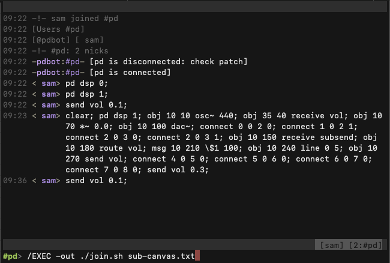
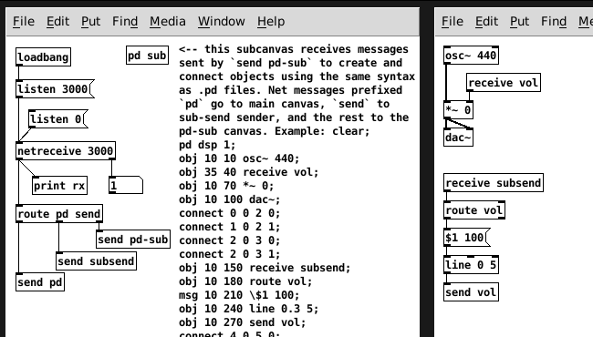

2022-07-14: Music with Markab + IRC + Pd
A new quest begins
A friend asked me the other day what I plan to do next with Markab. That question got me thinking and inspired what’s starting to look like a bit of a quest.
I’ve decided I want to be able to write Markab code to build and operate synth patches in Pure Data (pd “vanilla”). Also, I want to be able to control that process with irc chat as the primary user interface. The idea is that training a band of silly robots to play music would probably be fun and also have a fair possibility of translating well to video.
So far, I’ve written an irc bot to connect a Pure Data (pd “vanilla”) patch to a private irc channel that I’m hosting from a server on my desk.
This is what it looks like using irc to send Pd messages with instructions to modify its patch with a tone generator (41KB png):

This is what the pd patch looks like (14KB png):

Links
These are links to the raw files (no js) related to pdbot.
- pdbot irc bot written in Python to bridge between irc and Pd’s network protocol.
- Pd patch that listens for a connection from pdbot.
- shell script that I use with irssi to filter newlines out of a file of Pd messages so I can send them all at once without rate limiting by the irc server.
- text file with messages to tell Pd how to clear its subcanvas and then re-create its tone generator with a volume control receiver.